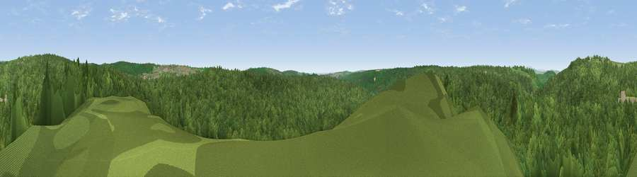

Viewpoint near Upper Lydbrook
#29854 in England · top 60% of its area beats it · near Upper LydbrookWhere it is
The exact computed spot (SO 62175 14325). Click the marker for map links.
The view, rendered

A 360° render of this exact spot computed from the terrain model, tree cover and land cover — summer colours, afternoon light, calibrated against photographs of famous viewpoints. Real trees, hedges and buildings will differ in detail.
The panorama
Grey silhouette: terrain skyline in each direction (720 bearings, Earth curvature and refraction included). Dashed green: skyline with trees (+15 m) and buildings (+8 m) as obstacles. Blue strip: how far the ground is visible on each bearing.
Where the view opens
Wedge length = distance to the farthest visible ground on that bearing (vegetation-aware). Rings at 10, 25 and 50 km.
What fills the view
96% woodland · 3% grassland · 1% built-up
Angular shares of the visible panorama (visual magnitude), not map area. Landscape diversity 0.09 (0–1 Shannon).
Key numbers
More beautiful places nearby
The staircase of upgrades: each row has a higher view potential than everything closer. Driving times are estimates from straight-line distance, calibrated against real road routing — check an actual route before setting out.
| Place | Direction | Drive | Score |
|---|---|---|---|
| Viewpoint near Upper Lydbrook | WNW · 3 km | ~7 min | 67.2 |
| Viewpoint near Ruardean | N · 3 km | ~8 min | 74.2 |
| Chase Wood Hill | NNW · 8 km | ~17 min | 77.6 |
| Viewpoint near Stinchcombe | SE · 19 km | ~33 min | 79.4 |
| Viewpoint near Woolhope | N · 20 km | ~33 min | 80.7 |
| Garway Hill | WNW · 21 km | ~36 min | 84.6 |
| Millennium Hill | NNE · 29 km | ~46 min | 86.9 |
| Worcestershire Beacon | NNE · 34 km | ~52 min | 87.1 |
51.82625, -2.55025 · source: screening · position refined by local search. Computed location — check access rights before visiting.